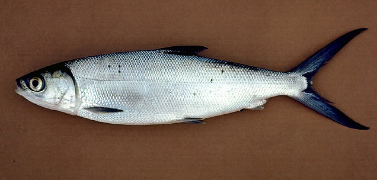
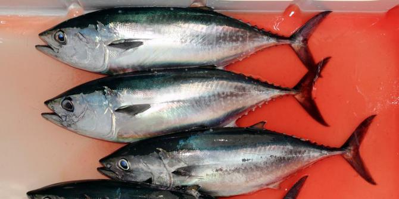
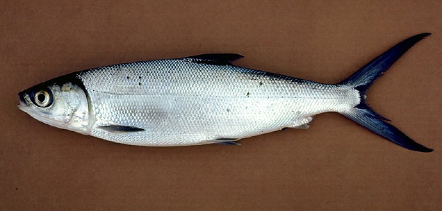
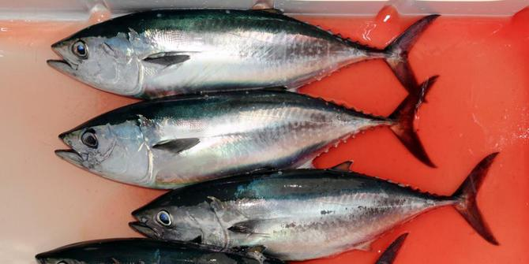
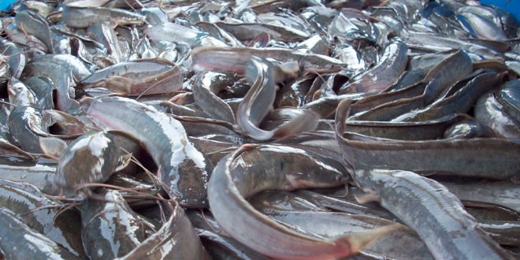
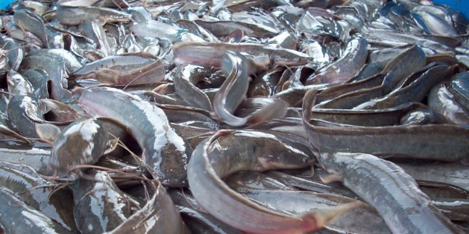

 

Ikan Gurami
Ikan Gurami (Osphronemus goramy) adalah sejenis ikan air tawar yang populer dan disukai sebagai ikan konsumsi di Asia Tenggara dan Asia Selatan. Di samping itu, di negara-negara lainnya gurami juga sering dipelihara dalam akuarium.
Ikan Bandeng
Bandeng disukai sebagai makanan karena rasanya gurih, rasa daging netral dan tidak mudah hancur jika dimasak. hidangan bandeng menjadi bagian tradisi wajib bagi warga Tionghoa asli Jakarta dan sekitarnya.
Ikan Tuna
Tuna adalah ikan laut pelagik yang termasuk bangsa Thunnini, terdiri dari beberapa spesies dari famili skombride. Hal ini karena otot tuna lebih banyak mengandung myoglobin daripada ikan lainnya. Beberapa spesies tuna yang lebih besar
Ikan Kakap
Ikan kakap merah adalah salah satu jenis ikan kakap yang mempunyai sisik berwarna merah. Ikan ini menempati jumlah terbanyak dalam jenis ikan kakap yang banyak ditemui di perairan Laut Indonesia.
Ikan Lele
Ikan Lele adalah salah satu jenis ikan yang sanggup hidup dalam kepadatan tinggi. Ikan ini memiliki tingkat konversi pakan menjadi bobot tubuh yang baik. Ikan lele adalah jenis ikan yang habitatnya di air tawar.